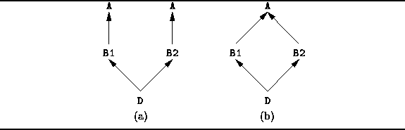

Data Structures and Algorithms
with Object-Oriented Design Patterns in C++
Data Structures and Algorithms
with Object-Oriented Design Patterns in C++In C++ a class can be derived from one or more base classes. However, all the base classes must be distinct. I.e., the following declaration is not allowed:
class D : public B, public B { ... }; // Wrong.
Nevertheless, it is possible for a class to be indirectly derived
from the same base class more than once.
E.g., consider the following class definitions:
class A { ... };
class B1 : public A { ... };
class B2 : public A { ... };
class D : public B1, public B2 { ... };
The derived class D inherits
two instances of the base class A--one indirectly via B1,
the other indirectly via B2.
In particular,
this means that D contains two copies of each member variable
of class A.
It also means that when a member function of A is called,
it is necessary to specify which of the two instances of A
is to be used--the one from which B1 is derived
or the one from which to B2 is derived.
This scenario is shown in Figure  (a).
(a).

Figure: Multiple Derivation and Virtual Base Classes
Sometimes it makes more sense for the derived class D to contain only one instance of the base class A. In C++ this is accomplished using virtual base classes :
class A { ... };
class B1 : virtual public A { ... };
class B2 : virtual public A { ... };
class D : public B1, public B2 { ... };
In this case, the derived class D contains only one instance
of the base class A.
Therefore, D contains only one copy of the member variables
declared in A
and there is not ambiguity when invoking the member functions of A.
This corresponds to the situation shown in Figure (b).
 Copyright © 1997 by Bruno R. Preiss, P.Eng. All rights reserved.
Copyright © 1997 by Bruno R. Preiss, P.Eng. All rights reserved.